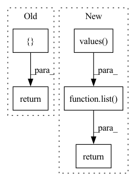

Pattern ID :30538

Before Change
split_map=split_map)
def partition_fn(self):
return RandomSplitPartitionFn, {
"split_map": self.split_map
}
def get_split_names(self) -> List[Text]:
return list(self.split_map.keys())
After Change
// calculates probability mass of each split
probability_mass = np.cumsum(list(self.split_map.values()))
max_value = probability_mass[-1]
return bisect.bisect(probability_mass, np.random.uniform(0, max_value))
def get_split_names(self) -> List[Text]:
return list(self.split_map.keys())
In pattern: SUPERPATTERN
Frequency: 4
Non-data size: 5
Instances
Fragment ID: 90353559
Project Name: maiot-io/zenml
Commit Name: 13cefef283b7780a4aa30c934b419224aca5d3ba
Time: 2021-04-12
Author: bariscandurak@hotmail.com
File Name: zenml/steps/split/random_split.py
M Class Name: RandomSplit
N Class Name: RandomSplit
M Method Name: partition_fn(3)
N Method Name: partition_fn(1)
M Parent Class: BaseSplit
N Parent Class: BaseSplit
M File Name: zenml/steps/split/random_split.py
N File Name: zenml/steps/split/random_split.py
M Start Line: 111
M End Line: 114
N Start Line: 86
N End Line: 107
'>
Before Change
if not track_unused_params:
raise NotImplementedError
arch_vector = []
used_params = config.get_used_params()
for param_name, param in self.params.items():
config_value = config.config_tree[param_name]
if isinstance(param, ArchParamTree):
arch_vector += param.encode_config(config_value)
else:
arch_vector += [config_value if used_params[param_name] else float("NaN")]
return arch_vector
After Change
if not flat_used_params[feature_name]:
features[feature_name] = float("NaN")
return list(features.values())
'>
Fragment ID: 90353563
Project Name: microsoft/archai
Commit Name: d21bf37ae2691f9bafb8815c457bb1cf84cf358c
Time: 2022-12-16
Author: pierokauffmann@gmail.com
File Name: archai/discrete_search/search_spaces/builder/arch_param_tree.py
M Class Name: ArchParamTree
N Class Name: ArchParamTree
M Method Name: encode_config(3)
N Method Name: encode_config(3)
M Parent Class: object
N Parent Class: object
M File Name: archai/discrete_search/search_spaces/builder/arch_param_tree.py
N File Name: archai/discrete_search/search_spaces/builder/arch_param_tree.py
M Start Line: 148
M End Line: 162
N Start Line: 130
N End Line: 146
'>
Before Change
def forward_stage_features(self, x: torch.Tensor) -> List[torch.Tensor]:
Return only hooks features.
x = self.forward(x)
return list(self._feature_hooks.get_output(x.device).values())
def init_weights(self):
Initialize weights.
After Change
last_features = self.forward(x)
hooks_features = self._feature_hooks.get_features(x.device)
hooks_features = list(hooks_features.values())
hooks_features = [x] + hooks_features
return last_features, hooks_features
def get_output_hooks_channels(self) -> List[int]:
Generate hooks output channels numbers.
'>
Fragment ID: 90353560
Project Name: eora-ai/torchok
Commit Name: 3386b384b694ec7c5788d61f2968f1c2727df369
Time: 2022-05-05
Author: rashit.bayazitov.1995@gmail.com
File Name: src/models/base_model.py
M Class Name: BaseModel
N Class Name: BaseModel
M Method Name: forward_stage_features(2)
N Method Name: forward_stage_features(2)
M Parent Class: nn.Module
N Parent Class: nn.Module
M File Name: src/models/base_model.py
N File Name: src/models/base_model.py
M Start Line: 166
M End Line: 167
N Start Line: 174
N End Line: 178
'>
Before Change
self.realize([self.t] + self.m + self.v)
def get_parameters(obj) -> List[Tensor]:
parameters: List[Tensor] = []
if isinstance(obj, Tensor):
parameters.append(obj)
elif isinstance(obj, (list, tuple)):
for x in obj: parameters.extend(get_parameters(x))
elif hasattr(obj, "__dict__"):
for v in obj.__dict__.values(): parameters.extend(get_parameters(v))
return parameters
After Change
elif isinstance(obj, dict):
for k,v in obj.items(): get_state_dict(v, arg+[k], _params)
return _params
def get_parameters(obj) -> List[Tensor]: return list(get_state_dict(obj).values())
'>
Fragment ID: 90353561
Project Name: geohot/tinygrad
Commit Name: 046b3952c361f5152e3b2fd8ad95dfb113b95f37
Time: 2023-03-11
Author: geohot@gmail.com
File Name: tinygrad/nn/optim.py
M Class Name: AnonimousClass
N Class Name: AnonimousClass
M Method Name: get_parameters(1)
N Method Name: get_parameters(1)
M Parent Class:
N Parent Class:
M File Name: tinygrad/nn/optim.py
N File Name: tinygrad/nn/optim.py
M Start Line: 83
M End Line: 90
N Start Line: 91
N End Line: 91